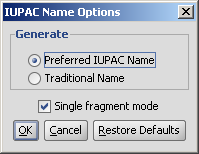
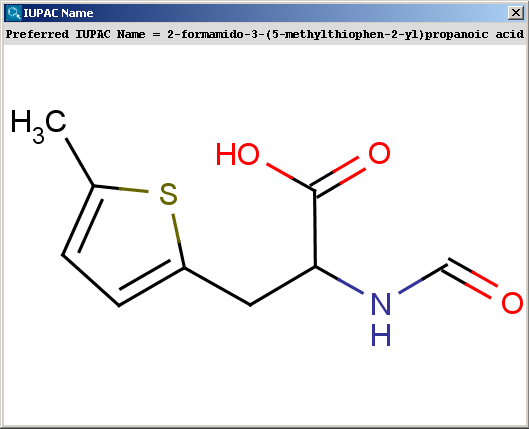
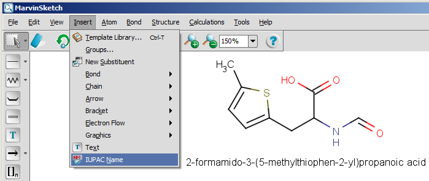

When possible, the generated name conforms to the IUPAC Provisional Recommendations for the Nomenclature of Organic Chemistry published in 2004. However, we do not claim full conformance with that document. Our current goal is to generate chemically correct names for as many cases as possible.
Importing IUPAC names is available from version 5.1.
You can generate either the "Traditional Name" or the "Preferred IUPAC Name" of
the molecules; you can change between these options in the IUPAC
Name Options panel. By default, the "Preferred IUPAC Name" option is set. If the traditional name cannot be generated, the preferred IUPAC Name will be
generated automatically.
By default, molecules are handled separately if more than one molecule are drawn in the sketcher. However, sometimes a single molecule consists of more fragments (e.g. salt molecules), where the fragments should be treated as one molecule. This can be reached by switching off the "Single fragment mode" option in the IUPAC Name Options panel.
|  |
|  |
The contents of the text field can be copied to the clipboard by Ctrl+C, the structure field offers a context menu from MarvinView.
The next snapshot below shows a functionality that is available from version 5.0: the IUPAC name can be inserted into the sketch, and it changes with the structure dynamically. This functionality is available from the Insert menu by selecting the IUPAC Name option.

ethane-1,2-diyl) are not supported yet.
In MarvinSketch, the name can be added to the canvas by using the "IUPAC Name" entry in the "Insert" menu. The name will be displayed below the molecule, and updated in real-time when the molecule is modified.
With MarvinView, open the file containing the structures to be names. Then select the menu File/Save As, and choose "IUPAC Name files" in the "Files of type" drop-down box. Choose a name for the file, and click on the Save button. The file will contain the names of the structures, one per line.
Alternatively, on the command line, you can use the following command:
molconvert name inputs.mol -o names.txt
The file names.txt will contain the names of the molecules in the input file,
with one name per line.
It is possible to use a format option to chose a nomenclature style:
i (default) uses the IUPAC rules for preferred names;
t uses a more traditional style.
molconvert name:t inputs.mol -o names.txt
molconvert "name:common,all" -s tylenol
Generate the most popular common name for a structure (It fails if none is known.):
molconvert name:common -s viagra
Adding names as an additional field to a SDfile can be achieved with the cxcalc tool.
cxcalc -S name input.sdf -o named.sdf
For information about how names can be generated from Java programs, see the developer documentation.